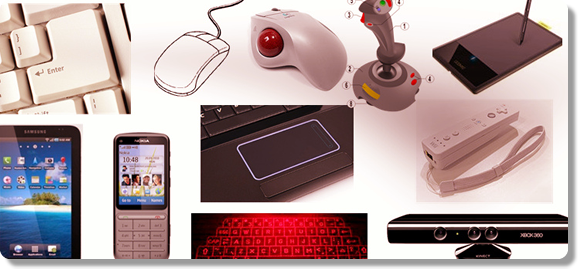
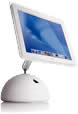
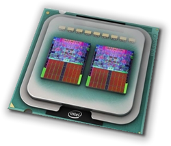
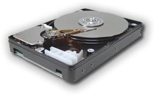
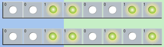

What, exactly, IS a computer?
I always like to have a mental picture for my definitions,
so I think of a computer as an information processor,
kind of like Cuisinart for words and numbers and ideas.
What, exactly, IS a computer?
I always like to have a mental picture for my definitions,
so I think of a computer as an information processor,
kind of like Cuisinart for words and numbers and ideas.
Instead of vegetables, we feed our computer data; the raw facts figures and symbols we have to work with. The computer uses a program stored in memory, to turn that data into information that's organized, meaningful and useful. (Of course, if the data contains errors, then the information won't really be all that useful; that's the origin of the term GIGO: Garbage IN; Garbage OUT).
The steps that your computer goes through to turn data into information is called the information processing cycle, and it consists of five different tasks:
- Input : retrieving the data to work on.
- Processing : organizing and analyzing the input.
- Output : displaying the results of the calculations.
- Storage : saving results and data for recall or further processing.
- Communication : working with other devices on a network.
A computer system consists of hardware, (the physical parts of your computer), and software (the programs used by the hardware), both working together to carry out these five steps.
Input and Output
Since the information processing cycle starts with input, we'll start there too, by asking: "What is an input device"? An input device is a piece of hardware that's used for two purposes:
- to enter data, such as the text in a letter, or the numbers in your checkbook.
- to enter instructions for the computer to carry out; that is, to tell the computer what to do
Here are some common computer input devices:

These devices include things like:
- keyboards, used to enter both instructions and data
- mice or trackballs, which are often used to issue instructions, but which can be a source of data as well
- joysticks used as controllers in computer games
- new types of gaming controllers, like the Wii and the X-Box Kinect
- graphics tablets, used to provide free-hand drawing input for artists
- and, as anyone who has an Android, iPad or iPhone knows, various kinds of touch screens
Other kinds of input devices include digital cameras, used to take still pictures which can be stored, edited, and printed on the computer, video camera, used as a Web cam, or to take movies that are stored and edited on the computer, microphones which are used to record sound on the computer, and scanners, which can digitize photographs, or which can be used to convert printed text to a form usable in a word processor (OCR).
Output Devices
If input devices give you a way to talk to your computer, then output devices let your computer "talk back". An output device is a piece of hardware that the computer uses to display information. The most common output device is the one you're looking at right now: your computer's screen, or monitor.
Of course, it's possible you're not looking at a monitor at all; that you are, instead, reading these lessons off the printed page. If so, then you're using the product of the other major output device, the printer, which is used to produce what is called hard-copy output.
Finally, not all output is visual; your computer is equally adept at producing audio output using speakers, just like your stereo.
The System Unit
We've got input, we've got output, but where's the computer? Where does the processing take place? The computer itself is usually located in a case that is called the system unit, often described as:


The "box-like case" part describes most IBM-compatible PCs. Not all systems look like boxes, though;
the original Apple iMacs, for instance,
had their system unit combined with the monitor like the picture on the left, while the second-generation iMacs
had a "mushroom like", rather than "box-like" case, like the picture on the right. The latest iMacs use a sleek,
all-in-one flat-panel combined monitor/system-unit design.

If you examine a laptop computer, you'll usually find the system unit beneath the computer's keyboard. In any event, the important thing to remember is that the system unit contains the "real" computer itself.
The CPU and Memory
While the system unit itself is filled with hundreds of different components, the two main parts of the "computer itself" are:

- the Central Processing Unit or CPU
- memory
The CPU is the "brain" of the computer, the part that actually does calculations, the part that "plays" the programs you load. When you run a program like Microsoft Word, its instructions are carried out by the CPU.
However, neither Microsoft Word, nor the papers and letters you write with Word, are "loaded into" the CPU. The CPU can only execute a handful of instructions at any given time; the rest of the instructions, (along with that French paper you're writing), are stored in an area of the System Unit called memory.
Memory, (usually called RAM, or Random Access Memory), is a temporary holding place for data and instructions, used only while your program is running. This is an important and fundamental concept: the CPU cannot act on instructions or data stored on a CD or a hard disk; instead, all data and all instructions must be loaded into memory, where it can then be accessed by the CPU.
The word temporary is also a fundamental concept. All data and all instructions in memory are retained only while your computer is "powered up". When you turn off the power to your computer, all the work you've done on "Balzac versus Bluto" is completely erased. If you want your documents to last "beyond the moment", you'll have to look at our next component, storage.
Storage
Storage is sometimes called persistent memory, or secondary storage. (Primary storage refers to dynamic memory, which we just discussed.) If you want the work you've done on your computer to persist, then you have two choices.
- leave the power on forever, making sure your programs are never closed and that your programs never crash, or
- learn about storage
The second option is the wise course of action.
Storage consists of two parts:
- storage media where your data is actually stored
- a storage device, the piece of hardware that records or retrieves your data
These two parts are tightly linked: if you use a CDR as your storage media, then you must use a CD Recorder as your storage device—you can't read or write your CD using the floppy disk drive, for instance.
Hard Drives
The hard disk is the main form of secondary storage used by today's computers.

To picture a hard disk, imagine a stack of pancakes. Now, imagine that each pancake is a rigid metal platter, coated on both sides with magnetic media, and mounted on a rapidly turning spindle. That's the hard drive, which is usually located inside the system unit.Hard drives have two advantages over all other storage media:
- they have very large capacity; most consumer-level PCs shipping today have at least a 500 GB (Gigabyte) drive, with 1 and 2 TB (Terabyte) drives becoming more common.
- Hard disks are also very, very fast, which means that programs and data are loaded and stored much faster. Even when programs are delivered on other media, such as CD ROM, they are almost always copied to your computer hard disk for normal use, because of the performance enhancement.
Some very lightweight computers now come with SSD or Solid State Disk drives instead of mechanical, magnetic-platter-based hard drives. SSD drives have the advantages of less weight and no moving parts, but currently they are more expensive, and have both lower capacity and and lower performance.
Memory and Data Representation
 Before you can really understand how memory or your CPU
works, you need to understand a little bit about how
instructions and data are stored in the computer.
Before you can really understand how memory or your CPU
works, you need to understand a little bit about how
instructions and data are stored in the computer.
Transistors, the basic building block of all integrated circuits, have only two states, kind of like a light switch. A transistor, at any given time is either on, meaning that it can act as a pathway for an electrical circuit, or off, meaning that it won't conduct electricity.
Because of this on/off characteristic, each transistor in memory or on a CPU can be used to store a single binary number with one of the two values 0 (if the transistor is off) or 1 (if the transistor is on). We call this single transistor, that stores one binary number, a bit or binary digit.

Of course, by itself, a single bit is not very useful, but, when combined with other bits, they can be used to represent more things like decimal numbers, text, images, sounds, and even program instructions.Almost all computers today, work with groups of eight bits, called a byte, (b-y-t-e, not b-i-t-e). For what it's worth, a group of four bits, or half a byte, is called a nybble, also with a y instead of an i.
When treated as a binary number, a single byte can store 256 different values, and, as mentioned, those values can be interpreted as numbers, characters, images, or instructions. This translation between the raw byte values stored in memory and the meaning that we assign to those bytes is known as encoding.
Physical Memory
 When a computer runs, both the instructions that it
carries out, and the data that it processes are stored
in memory. Memory is simply a particular kind of
integrated circuit, mounted on a circuit board called a
memory module.
When a computer runs, both the instructions that it
carries out, and the data that it processes are stored
in memory. Memory is simply a particular kind of
integrated circuit, mounted on a circuit board called a
memory module.
The picture shown here is a DIMM or Dual Inline Memory Module, which has chips mounted on both sides of the circuit board. The memory module fits into a special slot on the motherboard called a memory slot.
The key to understanding how memory works is to realize that it is addressable; each byte of memory in your computer has its own unique location, which is called its address. Memory works like the seats on a passenger train or an airplane, or like the PO boxes at the Post Office.
Because of this addressability, when your program runs, the CPU can say things like: "add the two numbers located at the addresses 120 and 122", or "execute the instruction you'll find in memory at address 1000".
Random Access Memory
Usually when we talk about a computer's memory, we are referring to Random Access Memory or RAM. When we say "my computer has 4 gigabytes of memory" we are referring to the amount of RAM the computer has. This kind of memory is also called main memory or primary storage.
There are two important things you need to understand about RAM:
- First, RAM is read/write memory; it can be changed by the CPU as your program runs. RAM is where your letters are stored while you are typing them, and where different programs are loaded as you use your computer. Since it is read/write memory, its contents aren't fixed.
- Second, RAM is volatile. That means it only retains the data you store as long as the computer is turned on. Once you turn the power off, your data is lost. That's why secondary storage devices such as disk drives are so important.
There is one small problem with the word "megabyte" (and, by extension, with the terms gigabyte and terabyte). Is a megabyte 1024 x 1024 bytes, that is 1,048,576, or does it mean exactly 1 million. That depends on who you ask. The store selling you a new hard drive uses the 1 million figure, since it makes the drives look larger.
To rectify this confusion, the terms "kibibyte", "mebibyte", "gibibyte" and "tebibyte" have been introduced to specifically mean the 1024 based units. Wikipedia has an article that explains these different terms, which haven't really caught on all that much. You don't need to memorize the exact sizes, but you should know that terms like "megabyte" can be a little fluid, depending on who is using them, and in what context.
Text and Memory
Numbers are one important
kind of value that is manipulated by computers. Most of us,
however, use characters much more often than numbers.
Characters, and groups of characters, (sentences, paragraphs,
chapters, books, libraries), form the basis for human
language and, arguably, civilization.

The first computer applications were, interestingly enough, all about words, specifically the secret codes used during World War II. The first research into "computing" as we know it was carried out by the mathematician, Dr. Alan Turing, and his colleagues at Blechley Park in England, where they built Collosus, a code-breaking computer designed to break Germany's Enigma cipher.
Once the war was over, however, computers moved out of the
academic and espionage communities and into the corporate
arena, where they were seen as glorified accounting machines.
It wouldn't be until the 1970s, with the Wang word processor,
that businesses realized that computers could deal with words
as well as numbers.
How Characters Are Stored
The problem with storing characters in a computer is that, to put it bluntly, you can't. Computers can only store and process binary numbers—nothing else. That means to store text inside the computer, it must be represented as a series of binary numbers; it must be encoded.
Converting between real-world integers and binary numbers is fairly natural, and converting between real-world floating-point numbers and binary numbers is not much more difficult. But how do you convert between binary numbers and characters?
 The answer, of course, is simple. You simply use an
agreed-up correspondence between a number and a character,
like Morse-Code for instance. (You do remember "SOS", don't
you?) All that has to happen is for everyone to agree that
the letter 'A' is represented by the binary number 1, the
letter 'B' is represented by the binary number 2, and so
on. Then storing text becomes easy.
The answer, of course, is simple. You simply use an
agreed-up correspondence between a number and a character,
like Morse-Code for instance. (You do remember "SOS", don't
you?) All that has to happen is for everyone to agree that
the letter 'A' is represented by the binary number 1, the
letter 'B' is represented by the binary number 2, and so
on. Then storing text becomes easy.
Instead of using Morse Code, computer makers designed their own number-to-character encoding schemes, such as EBCDIC used on IBM mainframes, and ASCII used on PCs. Recently, with the advance of the Internet, Unicode has become the standard character encoding used across the world. You'll learn more about how Java uses Unicode later in the semester. For right now, I'll use the terms ASCII and Unicode interchangeably, since the first 127 character codes are the same in both schemes.

Computers and Memory Summary
- Computers consist of hardware and software, working together to turn data into information.
- Hardware consists of memory and the CPU along with input, output and storage devices.
- Both the CPU and work with data expressed as binary numbers, (bits), organized as bytes (8 bits).
- All data used by the computer: numbers, text, images, and programs, are simply different interpretations of these primitive binary numbers.